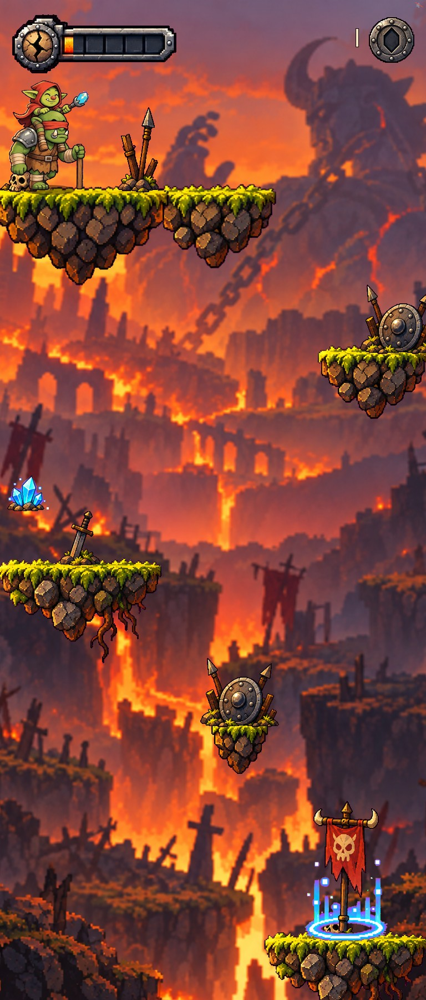
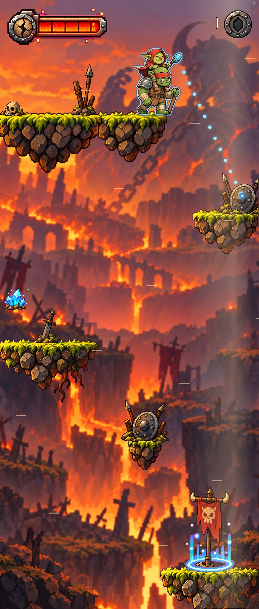

Le niveau en entier, tel que le jeu le dessine (sans défilement) : la corniche de départ, le premier bouclier en contrebas à droite, l'îlot de l'éclat à gauche, l'îlot d'une case du second bouclier, la sortie.
1 · Le niveau

2 · Tirer le premier bouclier (la première secousse s'annonce : la jauge rougit)

3 · Une partie entière, jouée par le robot au doigt (30 s, éclat compris)